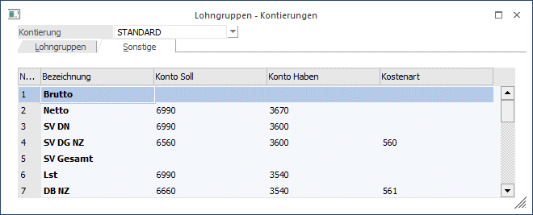
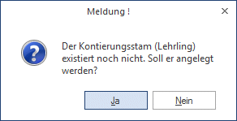

Die Lohngruppen haben im WinLine LOHN zwei Zwecke zu erfüllen:
ü Sie dienen der Zusammenfassung von mehreren Lohnarten für Auswertungen.
ü Diese Zusammenfassung von mehreren Lohnarten wird auch für die automatische Verbuchung in der WinLine FIBU verwendet.
Die Lohngruppe kann pro Lohnart hinterlegt werden.
Die Lohngruppen werden im Menüpunkt
1 Stammdaten
1 Lohnarten
1 Lohngruppentexte
angelegt und gewartet.

Eingabefelder
Ø Kontierung
Im Normalfall wird hier die Kontierung "STANDARD" angezeigt. D.h. diese Kontierung wird überall verwendet und auch bei der Neuanlage eines AN entsprechend vorgeschlagen.
Sollen nun unterschiedliche Kontierungen (z.B. für ARB/ ANG) verwendet werden, so kann im Feld Kontierung einfach eine neue Bezeichnung eingegeben werden. Wird diese Eingabe bestätigt, wird folgende Meldung angezeigt:

Wird die Meldung mit Ja bestätigt, wird ein neues Kontierungsschema angelegt, wobei alle Einstellungen vom Kontierungsschema "Standard" übernommen werden. D.h. es müssen dann nur mehr die Änderungen für das eigene Schema durchgeführt werden. Ein Kontierungsschema beinhaltet die Kontierungen für die Lohngruppen und für den Bereich Sonstige.
Sobald mehrere Kontierungsschemata angelegt sind, kann beim Öffnen des Menüpunkt aus der Auswahllistbox das gewünschte Kontierungsschema ausgewählt werden.
Das Kontierungsschema kann in weiterer Folge im AN-Stamm entsprechend hinterlegt werden. Bei der Buchungsübergabe aus der Lohnverrechnung werden die Buchungen getrennt nach Kontierungsschema erstellt und auch bei der Auswertung der Abrechnung kann der FIBU-Beleg getrennt nach der Kontierung ausgegeben werden.
Ø Bezeichnung
Eingabe der Lohngruppenbezeichnung z.B. Überstunden Angestellte oder Grundbezug Arbeiter. Diese Bezeichnung kann nur dann geändert werden, wenn die Kontierung "STANDARD" ausgewählt ist.
Ø Soll-Konto
Eingabe einer Kontonummer, auf die der Wert bei der Buchungsübergabe gebucht werden soll z.B. Konto 6000 Fertigungslöhne für Lohngruppe Löhne Arbeiter.
Ø Haben-Konto
Eingabe einer Kontonummer, auf die der Wert bei der Buchungsübergabe gebucht werden soll.
Hinweis:
Sind die hier eingetragenen Konten (Soll- und/oder Haben-Konto) in der WinLine FIBU mit Steuercodes angelegt, dann wird die Steuer aus den Summen der Beträge heraus gerechnet und auch entsprechend verbucht. Wenn beide Konten mit Steuer angelegt sind, wird - wie aus der WinLine FIBU gewohnt - keine Steuer gebucht.
Sind die hier eingetragenen Konten (Soll- und/oder Haben-Konto) in der WinLine FIBU als Konto mit Sachkonten-OP-Verwaltung angelegt, werden im Zuge der Buchung auch die entsprechenden Sachkonten-OP erzeugt. Wenn beide Konten mit Sachkonten-OP angelegt sind, wird keine Sachkonten-OP erstellt.
Ø Kostenart
Abhängig von den Einstellungen in den LOHN-Parametern (siehe Kapitel LOHN-Parameter im Handbuch WinLine START) kann hier eine Kostenart hinterlegt werden, die dann bei der Erfassung von Lohnarten automatisch vorgeschlagen wird. Bei der Erfassung kann diese vorgeschlagene Kostenart jederzeit verändert werden.
Wichtig!
Die Zuordnung von Lohnarten zu Lohngruppen darf während des Jahres nicht verändert werden.
Durch Anklicken des Registers "Sonstige" können die allgemeinen Kontierungen wie Brutto, Netto, SV-DN, SV-Gesamt, LST, KommSt etc. hinterlegt werden, wobei die Werte für SV-DG, DB, DZ, KommSt. und BV zwischen Normalzahlung und Sonderzahlung unterschieden werden können.
Hinweis:
Für die Verbuchung von Aconti gibt es 2 Möglichkeiten, wobei es davon abhängig ist, wie das Aconto "erzeugt" wurde:
ü Lohngruppe
Lohnarten, die mit
dem Abrechnungsschema "05 Abzug (nach Pfändungsber.)" oder "23 Abzug (vor
Pfändungsber.)" können in einer oder mehreren Lohngruppen zusammengefasst
werden, für die dann jeweils eine eigene Kontierung hinterlegt werden kann.
ü Sonstige
Für Acontizahlungen,
die über das Pfändungsmodul abgerechnet werden (Pfändungstyp "3:Netto Abzug
(Aconto) z.B. Firmenkredite oder dergleichen", gibt es eine eigene Kontierung
bei den Lohngruppen im Bereich "Sonstige" - Aconto Pfändung. Diese Art von
Aconti wird ggf. anders verbucht, als die "normalen" Aconti.
Achtung:
Es gibt zwei Arten, wie das Brutto verbucht werden kann:
ü Detaillierte Verbuchung anhand der Lohngruppen
ü Gesamtsumme anhand der allgemeinen Kontierung "Brutto".
Auf keinen Fall sollten beide Optionen gemeinsam eingesetzt werden, da sonst das Brutto doppelt verbucht wird.
Durch Drücken der F5-Taste werden alle Änderungen gespeichert und das Fenster wird geschlossen.
Durch Drücken der ESC-Taste wird das Fenster geschlossen, alle Änderungen werden verworfen.